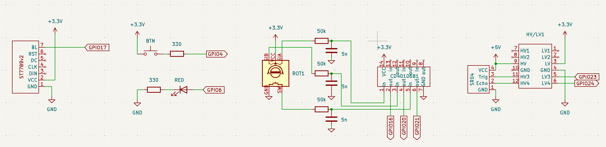

Piotr ZAWADZKI
Schemat wszystkich połączeń elementów układu przedstawiono poniżej.

Funkcjonalnie aplikacja nie jest skomplikowana:
Każdy z elementów zarządzany jest przez osobny wątek.
std::thread lwsw_button_task( button_thread, std::ref(appState), std::vector<std::string>({ "/dev/input/event0" }) ) ;
std::thread detection_task( detection_thread, std::ref(appState), hardwareConfig.SR04_Trigger, hardwareConfig.SR04_Echo) ;
std::thread rotary_task( rotary_encoder_thread, std::ref(appState), hardwareConfig.rotary_SIA, hardwareConfig.rotary_SIB) ;
std::thread display_task( display_thread, std::ref(appState), hardwareConfig.displayConfig) ;
std::thread rotary_button_task( rotary_button_thread, std::ref(appState), hardwareConfig.rotary_SW) ;
std::thread alarm_led_task( gpio_led_thread, std::ref(appState), hardwareConfig.LED ) ;
std::thread displayBacklight_task( backlight_led_thread, std::ref(appState), hardwareConfig.displayBacklightConf) ;
while (appState.keepRunning.load()) {
std::this_thread::sleep_for(std::chrono::milliseconds(100));
auto now = std::chrono::steady_clock::now();
if (appState.setAlarm.load() && now > appState.alarmTime.load()) {
std::cout << "ALARM expired" << std::endl;
appState.setAlarm.store(false);
appState.alarmTime.store(std::chrono::steady_clock::time_point::min());
}
}
std::cout << "Main thread: waiting for child threads stop." << std::endl;
displayBacklight_task.join();
alarm_led_task.join();
rotary_button_task.join();
display_task.join();
rotary_task.join();
detection_task.join();
lwsw_button_task.join() ;Wątki komunikują się ze sobą poprzez globalną zmienną
struct Application_state {
std::atomic<bool> keepRunning;
std::atomic<bool> setAlarm;
std::atomic<std::chrono::steady_clock::time_point> alarmTime;
std::atomic<float> distance; // in cm, distance measured by the sensor
std::atomic<int> proximityThreshold; // in cm, distance below which the alarm is triggered
} appState = {
.keepRunning = true,
.setAlarm = false,
.alarmTime = noalarmTime,
.distance = 400.0,
.proximityThreshold = 10
};Jak widać jest to struktura złożona z niezależnym elementów atomicznych, które mogą być w bezpieczny sposób odczytywane i aktualizowane przez wątki.
Definicję sprzętowej konfiguracji wszystkich elementów zebrano w
zmiennej hardwareConfig. Konfiguracja odpowiednich
elementów jest przekazywana jako parametr do zainteresowanych wątków.
Każdy wątek odpowiada za przydzielenie sobie zasobów i ich zwolnienie. W
większości przypadków występujące w kodzie jawne zwalnianie zasobów może
być pominięta, dzięki konstrukcji klas zarządzających zasobami zgodnie z
zasadą RAII (Resource Acquisition Is Initialization), która w
praktyce oznacza, że każdy zasób przydzielony w konstruktorze powinien
być zwolniony w destruktorze. Destruktory są wykonywane zawsze, nawet
gdy nastąpi rzucenie wyjątku (throw), więc stosowanie takiej zasady
umożliwia bezpieczne zarządzanie zasobami.
Dzięki modułowej strukturze programu, kod procedur odpowiedzialnych za obsługę elementów jest samodzielny i jego analiza nie powinna nastręczać trudności.
Elementy wejściowe interfejsu aplikacji
libgpiod w wątku
rotary_button_thread.gpio-key obsługiwany w wątku
button_thread.rotary_encoder_thread.detection_thread z wykorzystaniem klasy
SR04.Elementy wyjściowe interfejsu aplikacji
detection_thread z wykorzystaniem klasy
SR04.libgpiod w wątku
backlight_led_thread.gpio-led i sterowana w wątku
gpio_led_thread.display_thread.gpio= w pliku /boot/config.txtOpcja gpio= w pliku /boot/config.txt
pozwala na ustawienie parametrów linii GPIO podczas uruchamiania
systemu. Możemy zdefiniować kierunek (wejście lub wyjście), stan
początkowy oraz rezystory podciągające dla konkretnych pinów GPIO.
Dzięki temu linie są odpowiednio przygotowane, zanim system operacyjny
zacznie z nich korzystać.
Sprawdź zgodność bieżącej konfiguracji (wykorzystaj polecenie
cat) z konfiguracją opisaną poniżej.
gpio=Składnia polecenia jest następująca:
gpio=<numer_pinu>=<kierunek>,<rezystor>,<stan_początkowy><numer_pinu>: Numer pinu GPIO (np. 4, 16,
20).<kierunek>: Kierunek pracy pinu:
ip lub in — wejście (input).op lub out — wyjście (output).<rezystor>: Ustawienie rezystora podciągającego:
pu — podciągnięcie do VCC (pull-up).pd — podciągnięcie do GND (pull-down).pn — brak podciągnięcia (no pull).<stan_początkowy>: Stan początkowy dla wyjść:
dh — stan wysoki (drive high).dl — stan niski (drive low)./boot/config.txtAby odpowiednio skonfigurować linie GPIO wykorzystywane w ćwiczeniu,
należy dodać poniższe linie do pliku /boot/config.txt:
# Wstępna konfiguracja linii GPIO
gpio=4=ip,pd
gpio=16=ip,pd
gpio=20=ip,pd
gpio=21=ip,pd
gpio=23=op,dh
gpio=24=ip,pdgpio=4=ip,pd: Ustawia GPIO 4 jako wejście z rezystorem
pull-down.gpio=16=ip,pd i gpio=20=ip,pd: Ustawia
GPIO 16 i 20 (enkoder obrotowy) jako wejścia z rezystorem
pull-down.gpio=21=ip,pd: Ustawia GPIO 21 (przycisk enkodera) jako
wejście z rezystorem pull-down.gpio=23=op,dh: Ustawia GPIO 23 (Trigger dalmierza
HC-SR04) jako wyjście w stanie wysokim.gpio=24=ip,pd: Ustawia GPIO 24 (Echo dalmierza) jako
wejście z rezystorem pull-down.gpio-keydtoverlay=gpio-key,gpio=4,active_low=0,gpio_pull=down,label=button,keycode=16,debounce=200gpio=?gpio= są umieszczone przed innymi konfiguracjami, aby
zostały zastosowane we właściwym momencie./boot/config.txt należy zrestartować system, aby nowe
ustawienia zostały zastosowane.Polecenie:
Użyj narzędzia gpiodetect do wyświetlenia dostępnych w
systemie kontrolerów GPIO oraz gpioinfo z pakietu
libgpiod do wyświetlenia wszystkich dostępnych linii
GPIO dla kontrolera pinctrl-rp1.
Wykonaj zrzut/zrzuty ekranu (3.1.x) zawierające wynik działania komend. Zrzuty zamieść w sprawozdaniu.
Polecenie:
Uruchom evtest:
evtestZobaczysz listę dostępnych urządzeń wejściowych. Wybierz urządzenie odpowiadające przyciskowi (np.
event0
lub inne z nazwą gpio_keys lub button).
Przykład:
No device specified, trying to scan all of /dev/input/event*
Available devices:
/dev/input/event0: gpio_keys
Select the device event number [0-...]: 0Naciskaj i zwalniaj przycisk podłączony do GPIO 4, obserwując generowane zdarzenia w terminalu.
Wykonaj zrzut ekranu (3.2.1) zawierający wynik działania komendy. Zrzut zamieść w sprawozdaniu.
Polecenie:
Użyj gpiomon do monitorowania zboczy na GPIO 21. Wykonaj
komendy monitorujące a) tylko zbocza narastające, b) tylko zbocza
opadające, c) oba rodzaje zboczy. W czasie aktywnej komendy naciskaj
przycisk enkodera, aby sprawdzić jej działanie.
gpiomon <opcje> <chip> <lineNum>Składnia dostępna po gpiomon -h lub
man gpiomon.
Wykonaj zrzut/zrzuty ekranu (3.3.x) zawierający wynik działania komendy. Zrzut zamieść w sprawozdaniu.
Polecenie:
Monitoruj stan lini 16 i 20 enkodera obrotowego korzystając z
gpiomon. Przyjmij wyzwalanie zboczami narastającym i
opadającym. Wskazówka gpiomon pozwala na
monitorowanie stanu wielu linii. Wykonaj kilka przejść enkodera w prawo
(CW), zatrzymaj komendę, a następnie kilka w lewo (CCW). Porównaj
otrzymane sekwencje.
Wykonaj zrzut/zrzuty ekranu (3.4.x) zawierający wynik działania komendy. Zrzut zamieść w sprawozdaniu.
Polecenia:
Ustaw przeszkodę przed dalmierzem.
Otwórz dwie sesje na system target.
W sesji A ustaw GPIO 23 jako wyjście i ustaw stan
niski Trigger:
gpioset gpiochip0 23=0W sesji B sprawdź, czy Echo jest w stanie niskim:
gpioget gpiochip0 24W sesji B włącz monitorowanie obu zboczy, ogranicz się do dwóch
zdarzeń, wykorzystaj opcję formatu postaci
--format="%e %s.%n", pytajniki zastąp odpowiednimi
opcjami
gpiomon ??? --format="%e %s.%n" gpiochip0 24W sesji A wyzwól sekwencję pomiaru komendą
gpioset --mode=time --usec 20 gpiochip0 23=1 && gpioset gpiochip0 23=0W sesji A zanotuj różnicę czasu w mikrosekundach. Oblicz odległość od przeszkody wg wzoru D[m] = 0.5 * t[μs] * 10−6 * 340[m/s]
zamieść w sprawozdaniu.
pinctrl i
gpioinfoUwaga Główna różnica pomiędzy gpioinfo
a pinctrl polega na tym, że gpioinfo
komunikuje się ze sterownikiem kontrolera linii, natomiast
pinctrl bada/modyfikuje bezpośrednio zawartość rejestrów.
Używanie pinctrl do modyfikacji nastaw może prowadzić do
niestabilności systemu, bo wprowadza niezgodność pomiędzy rzeczywistym
stanem rejestrów a tym, co sobie o nich myśli sterownik systemu
operacyjnego.
Polecenia:
Wyświetl aktualną konfigurację pinów:
ls /sys/kernel/debug/pinctrl/
cat /sys/kernel/debug/pinctrl/*-rp1/pinsSprawdź ustawienia pinów wykorzystywanych w ćwiczeniu
pinctrl get 4,6,16,17,20,21,23,24
gpioinfo gpiochip0W sesji A uruchom aplikację demo
w sesji B sprawdź ponownie ustawienia pinów. W rezultatach
komendy gpioinfo zwróć uwagę na nazwy przypisane do
pinów.
Wykonaj zrzut ekranu (3.6.1) zawierający wynik działania komendy z punktu 4. Zrzut zamieść w sprawozdaniu.
Polecenie
Zbuduj dostarczony kod źródłowy. Jest to aplikacja nieco okaleczona w
porównaniu do dostarczonej wersji demo. Celem dalszych
działań jest przywrócenie pierwotnej funkcjonalności. Miejsca wymagające
modyfikacji oznaczono jako TODO. Stosuj się do opisów
zamieszczonych w komentarzach. Przed wykonaniem zrzutu ekranu nie kasuj
komentarzy zawierających polecenie.